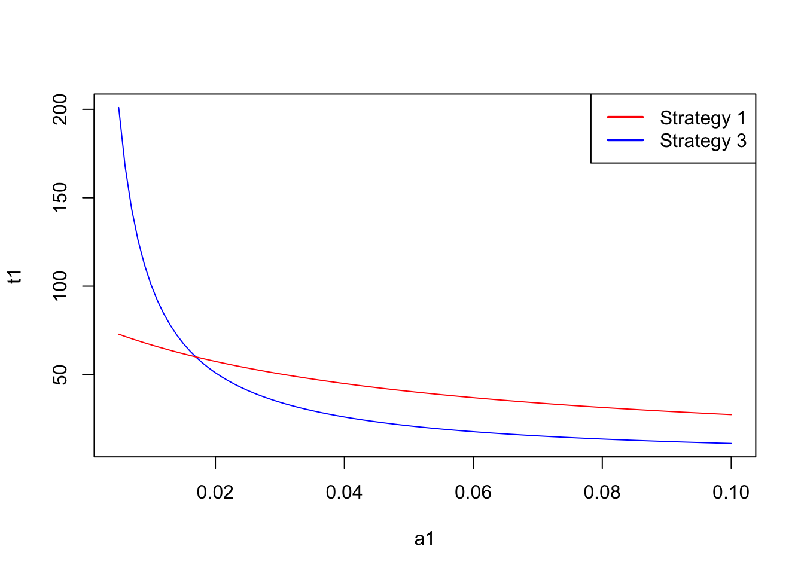
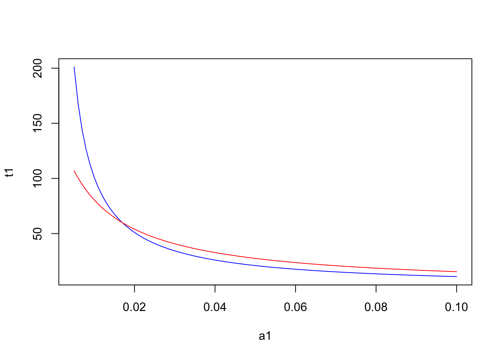
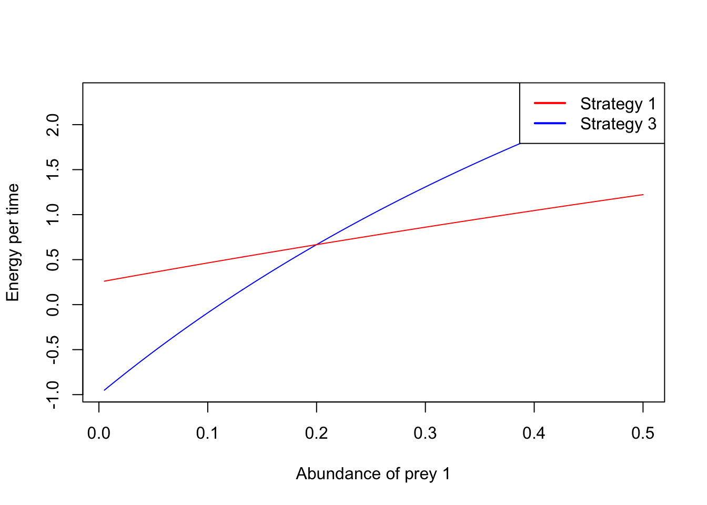

h1=1 #Handling time of prey type 1 (s)
h2=60 #Handling time of prey type 2 (s)
a2=0.05 #abundance of prey type 2 (ind/s)2 Economic models of behavior: do animals optimize?
Animals have to make decisions all the time: where and when to move, when and what to eat, whom to mate, etc. How do animals make those decisions? One approach to study this question is to assume that animals take decisions that maximize their fitness. This approach is rooted in the idea that natural selection, under certain conditions, maximize the average fitness of individuals in a population. It underpins many of the studies in behavioral ecology, and lead to the development during the 1980’s.of a sub-field dedicated to the study of foraging decisions, known as optimal foraging. The idea of optimal foraging is to develop economic models of foraging behavior, assessing the costs and benefits of different actions, and identifying in any particular circumstance the action that maximizes benefits and minimizes costs. This is, animals are seen as optimizer of decision-making. Here we consider models for two “idealized” types of foragers: searching predator and sit-and-wait predators.
2.1 Searching predator
The searching predator is typified as an animal that actively searchs for food. For instance, wolfs roam the landscape constantly searching for their prey. The question is then, any time that a forager comes across a prey whether to spend the time catching and eating it, or continuing to search for another prey, for instance a larger or easier prey item. Joan Roughgarden also liked this type of foraging to the sushi-bar problem where dishes are coming one after the other on a moving tray, and a person needs to decide whether to pick a given dish. This decision is particularly akin to the searching predator situation when one assumes that a person can have only one dish at a time in her or his table, We consider two types of searching predators: time minimizers and energy maximizers.
2.1.1 Time minimizer
Many searching predators are themselves preys to other animals. For instance shrews search for insects to eat, but can be themselves eaten by carnivores or owls. Therefore a reasonable assumption is that they are making foraging decisions that minimize the time foraging. Let’s assume there are two types of prey items, type 1 and 2. These two preys occur at different abundances in the environment, let’s name them \(a_1\) and \(a_2\). These abundances can be measured as encounter rates from the predator perspective, this is the number of prey items found per unit time. The two types of prey also have different handling times, this is the amount of time required to chase and process the prey, \(h_1\) and \(h_2\) . We also convention to call the type 1 prey the prey with the lowest handling time, i.e. \(h_1<h_2\),
A searching predator can adopt one of the following three strategies:
Strategy 1: to consume only prey items of type 1
Strategy 2: to consumer only prey items of type 2
Strategy 1&2: to consumer both types of prey
In order to find out which strategy should be adopted by the forager, one needs to calculate the average spent per food item in each of the strategies. For Strategy 1 the average time per item, \(T_1\) is the sum of the amount of time the predator needs to encounter a prey with the amount of time that it takes to process that prey. As the abundance is measured in encounter rates, i.e. prey items per unit time, the inverse of that is the waiting time for a prey. Therefore we have for Strategy 1,
\[T_1=1/a_1+h_1\]
Similarly, for Strategy 2, the average time per item \(T_2\) is given by
\[T_2=1/a_2+h_2.\]
A more interesting case is Strategy 3. Here the waiting time is the inverse of the sum of the abundances of both times of prey, while the handling time is average of the handling times of both ypes of prey weighted by their relative abundance,
\[ T_{3}=\frac{1}{a_1+a_2}+\frac{a_1 h_1+a_2 h_2}{a_1+a_2} \]
We can now define the problem that the forager has to solve as to find the strategy \(s\) that minimizes \(T_s\):
\[ min(T_s) \quad \text{for} \quad s=1, 2, 3 \]
It is easy to demonstrate that Strategy 2 is always worse than Strategy 3, independently of the abundances of the two types of prey. This happens because Strategy 3 always implies a longer waiting time than the two other specialized strategies (i.e. one has to wait less time to find any item of an prey than items of a given prey time, \(1/(a_1+a_2)<1/a_2\)) and the handling time of strategy 3 can never be higher than the handling time of strategy 2 (it’s always a value betwen \(h_1\) and \(h_2\)). So we can exclude Strategy 2 from our analysis. The choice is then between Strategy 1, just taking items of the preferred prey item, and 3, taking items of both types of prey. Let’s assess this two strategies with a little bit of help from R. We start by assuming that the handling time of prey type 1 is 1 second while prey type 2 takes 60 seconds. Let’s also assume that the abundance of prey type 2 is 0.05 individuals per second, i.e. one individuals needs to wait in average 20 seconds to find prey type 2.
Let’s now plot the time per item of each of the strategies as a function of the abundance of the preferred prey.
a1<-seq(0.005,0.1,0.001) #abundance of prey time 1 (ind/s)
t1=1/a1+h1 #time per item of Strategy 1 (s)
t3=1/(a1+a2)+h1*a1/(a1+a2)+h2*a2/(a1+a2) #time per item of Strategy 2 (s)
plot(a1,t1, type="l", col="blue")
lines(a1,t3, type="l", col="red")
legend("topright",
legend = c("Strategy 1", "Strategy 3"), # Labels
col = c("red", "blue"), # Line colors
lwd = 2, # Line width
lty = 1) 
There is a critical threshold of the abundance of prey type 1 above which strategy 1 is preferrable, while below that threshold strategy 3 is the best strategy. Interestingly this threshold does not depend on the abundance of the less preferable prey. For instance, if we assume a low abundance of prey time 2 at 0.01, the resulting plot is:
a2 = 0.01
t1=1/a1+h1 #time per item of Strategy 1 (s)
t3=1/(a1+a2)+h1*a1/(a1+a2)+h2*a2/(a1+a2) #time per item of Strategy 2 (s)
plot(a1,t1, type="l", col="blue")
lines(a1,t3, type="l", col="red")
To determine this critical threshold one can compare the two vectors, T1 and T3, and find the first position at which T1 becomes smaller than T3,
pos=which(t1<t3)[1]
a1[pos][1] 0.017So the critical threshold for these handling times occurs when \(a_1=0.017\) individuals per second.
2.1.2 Energy per time maximizer
Perhaps more often, animals try to maximize their energy yield (benefits) while minimizing the time foraging (costs). Or in another way of looking at it, they try to maximize their energy yield per unit time. We already know the time per item associated to each of the three strategies of the searching predator. We now need to calciulate the average energy yield per item. Consider now that the energy content of the prey items are \(e_1\) and \(e_2\) for prey of type 1 and 2, respectively. We define prey 1 as the preferred type of prey, so we assume that the ratio of the energic content (measured for instance in calories) to the handling time is lower for type 1 prey, i.e. \(e_1/h_1>e_2/h_2\). Now we calculate the energy yield per item for each strategy. We start with the energy content o fhe prey, but need to subtract the energy spent while waiting the prey and the energy spent chasing and processing the prey,
\[ E_1=e_1-e_w*t_w \]
e1<-10 #Caloric content of prey 1
e2<-100 #Caloric content of prey 2
h1<-1 #Handling time of prey 1
h2<-60 #Handling time of prey 2
ew<-1 #Energy spend per unit time while waiting (cal/s)
eh<-1 #energy spend per unit time handling the prey (cal/s)
a1<- seq(0.005,0.5,0.001) #Abundance of prey 1
a2<-0.05
E1 = e1 -(eh*h1) - ew/a1 #energy per item of Strategy 1 (s)
E3 = (e1*a1+e2*a2)/(a1+a2)-
eh*(h1*a1+h2*a2)/(a1+a2)-ew/(a1+a2) #energy per item of Strategy 3 (s)
T1=1/a1+h1 #time per item of Strategy 1 (s)
T3=1/(a1+a2)+h1*a1/(a1+a2)+h2*a2/(a1+a2) #time per item of Strategy 3 (s)
ET1 = E1/T1 #energy per time of strategy 1
ET3 = E3/T3 #energy per time of strategy 3
plot(a1,ET1,type="l",xlab="Abundance of prey 1", ylab="Energy per time", col="blue")
lines(a1,ET3,type="l",col="red")
legend("topright",
legend = c("Strategy 1", "Strategy 3"), # Labels
col = c("red", "blue"), # Line colors
lwd = 2, # Line width
lty = 1) 